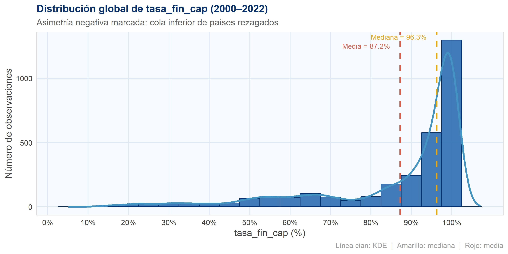
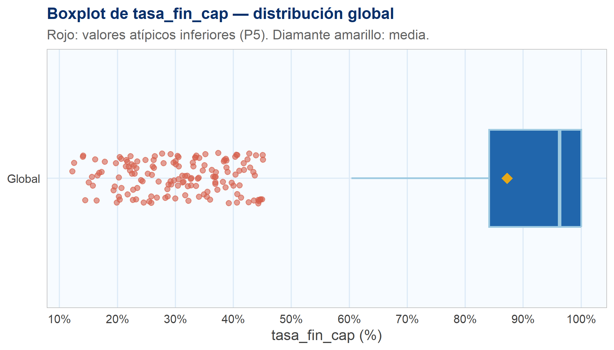
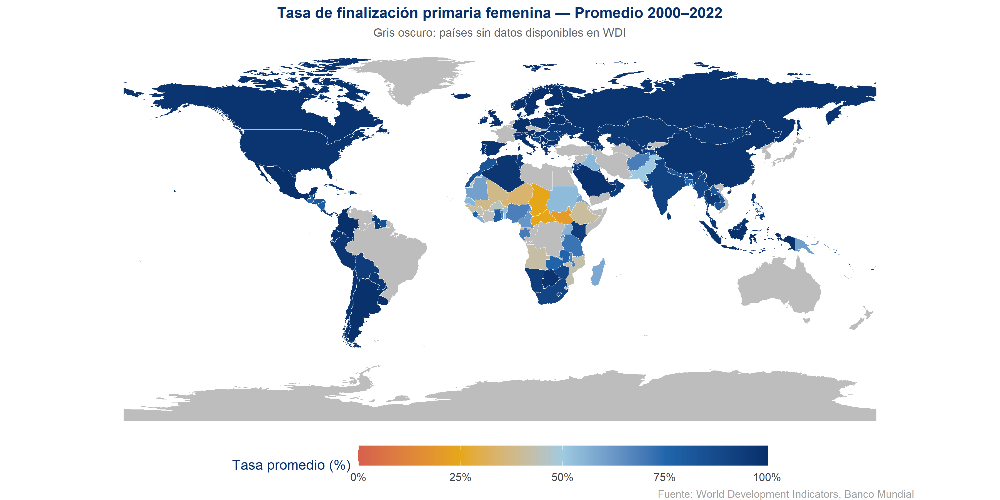
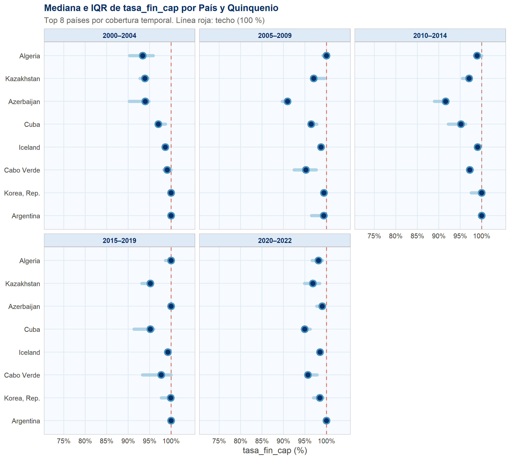
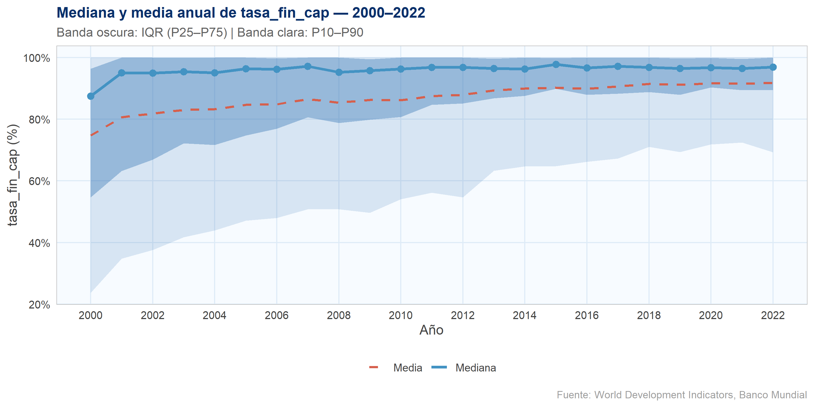
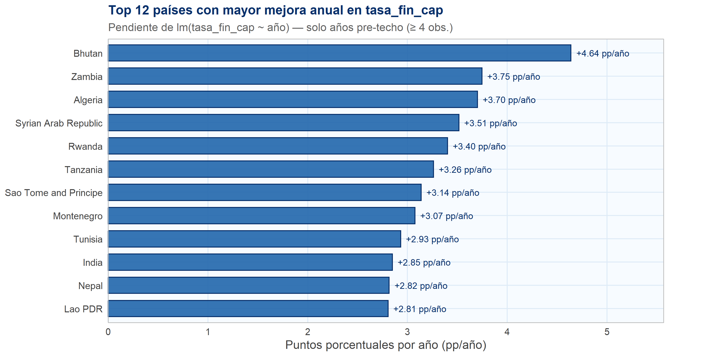
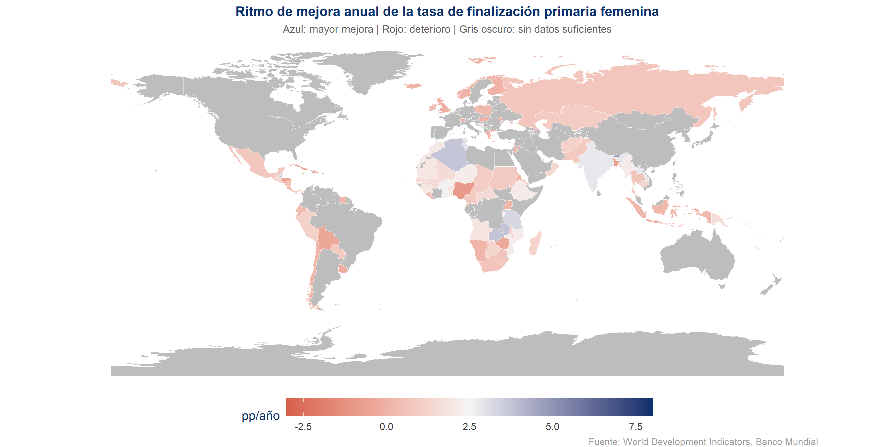

Chapter 2 Análisis exploratorio de datos
2.1 Configuración y carga de datos
En el período 2000–2022 contamos con datos de 192 países, aunque la cobertura es heterogénea: solo 30 de ellos (15,6 %) reportan la serie completa de 23 años, mientras que el resto presenta huecos en distintos momentos. Estos resultados confirman que trabajamos con un panel desbalanceado; por ello, los análisis temporales y las comparaciones entre países deben considerar esta asimetría para evitar sesgos en la interpretación.
Es importante señalar que la tasa de finalización primaria puede superar el
100 %. Esto ocurre porque el numerador contabiliza a todos los estudiantes que
egresan del último grado de primaria —independientemente de su edad—, mientras
que el denominador solo incluye la población oficialmente asignada a ese nivel.
La presencia de estudiantes en sobredad, subedad o con historial de repetición
puede inflar el numerador. Para mejorar la claridad visual, los gráficos trabajan
con una versión acotada (tasa_fin_cap ∈ [0, 100]).
2.2 Análisis univariado
2.2.1 Cobertura temporal por país
years_target <- 2000:2022
n_years_target <- length(years_target)
coverage_por_pais <- df_2 %>%
distinct(pais, anio) %>%
count(pais, name = "n_anios") %>%
mutate(frac_cobertura = round(n_anios / n_years_target, 3))
resumen_cobertura <- coverage_por_pais %>%
summarise(
`Países con datos` = n(),
`Años mínimo` = min(n_anios),
`P25` = quantile(n_anios, 0.25),
`Mediana` = median(n_anios),
`P75` = quantile(n_anios, 0.75),
`Años máximo` = max(n_anios)
)
kable(resumen_cobertura,
caption = "Resumen de cobertura temporal por país (2000–2022)",
align = "c") %>%
kable_styling(bootstrap_options = c("striped","hover","condensed"),
full_width = FALSE)| Países con datos | Años mínimo | P25 | Mediana | P75 | Años máximo |
|---|---|---|---|---|---|
| 192 | 1 | 11 | 17 | 21 | 23 |
2.2.2 Observaciones con tasa > 100 %
top_mayor_100 <- df_2 %>%
filter(tasa_fin > 100) %>%
arrange(desc(tasa_fin)) %>%
select(País = pais, Año = anio, `tasa_fin (%)` = tasa_fin) %>%
head(15)
kable(top_mayor_100,
caption = "Top 15 observaciones con tasa de finalización > 100 %",
digits = 2,
align = c("l","c","r")) %>%
kable_styling(bootstrap_options = c("striped","hover","condensed"),
full_width = FALSE)| País | Año | tasa_fin (%) |
|---|---|---|
| Monaco | 2016 | 168.18 |
| Seychelles | 2017 | 155.30 |
| St. Kitts and Nevis | 2021 | 150.35 |
| Seychelles | 2009 | 142.89 |
| Maldives | 2005 | 135.66 |
| Turkiye | 2016 | 135.34 |
| Saudi Arabia | 2012 | 134.67 |
| Seychelles | 2020 | 133.50 |
| Belarus | 2002 | 132.86 |
| Turks and Caicos Islands | 2018 | 130.95 |
| Seychelles | 2016 | 129.50 |
| Seychelles | 2018 | 128.47 |
| Maldives | 2006 | 126.84 |
| Saudi Arabia | 2011 | 126.43 |
| Nauru | 2016 | 126.32 |
2.2.3 Distribución de tasa_fin_cap
summary_df <- df_2 %>%
summarise(
Mínimo = round(min(tasa_fin_cap), 2),
P25 = round(quantile(tasa_fin_cap, 0.25), 2),
Mediana = round(median(tasa_fin_cap), 2),
Media = round(mean(tasa_fin_cap), 2),
P75 = round(quantile(tasa_fin_cap, 0.75), 2),
Máximo = round(max(tasa_fin_cap), 2),
Rango = round(max(tasa_fin_cap) - min(tasa_fin_cap), 2),
IQR = round(IQR(tasa_fin_cap), 2)
)
kable(summary_df,
caption = "Estadísticos descriptivos de tasa_fin_cap (acotada a 0–100)",
align = "c") %>%
kable_styling(bootstrap_options = c("striped","hover","condensed"),
full_width = FALSE)| Mínimo | P25 | Mediana | Media | P75 | Máximo | Rango | IQR |
|---|---|---|---|---|---|---|---|
| 12.19 | 84.13 | 96.29 | 87.23 | 100 | 100 | 87.81 | 15.87 |
# Histograma con densidad superpuesta
dens <- density(df_2$tasa_fin_cap, adjust = 1.1)
dens_df <- data.frame(x = dens$x, y = dens$y)
# escalar densidad al eje de conteos
bin_w <- 5
n_obs <- nrow(df_2)
escala <- bin_w * n_obs
ggplot(df_2, aes(x = tasa_fin_cap)) +
geom_histogram(
aes(y = after_stat(count)),
binwidth = bin_w,
fill = AZUL_MAIN,
color = AZUL_FUERTE,
linewidth = 0.5,
alpha = 0.85
) +
geom_line(
data = dens_df,
aes(x = x, y = y * escala),
color = CIAN,
linewidth = 1.2
) +
geom_vline(xintercept = median(df_2$tasa_fin_cap),
color = AMARILLO, linetype = "dashed", linewidth = 0.9) +
geom_vline(xintercept = mean(df_2$tasa_fin_cap),
color = ROJO_OUT, linetype = "dashed", linewidth = 0.9) +
annotate("text", x = median(df_2$tasa_fin_cap) - 2.5,
y = Inf, vjust = 1.5, hjust = 1,
label = paste0("Mediana = ", round(median(df_2$tasa_fin_cap), 1), "%"),
color = AMARILLO, size = 3.2) +
annotate("text", x = mean(df_2$tasa_fin_cap) - 2.5,
y = Inf, vjust = 3.2, hjust = 1,
label = paste0("Media = ", round(mean(df_2$tasa_fin_cap), 1), "%"),
color = ROJO_OUT, size = 3.2) +
scale_x_continuous(breaks = seq(0, 100, 10), labels = label_percent(scale = 1)) +
labs(
title = "Distribución global de tasa_fin_cap (2000–2022)",
subtitle = "Asimetría negativa marcada: cola inferior de países rezagados",
x = "tasa_fin_cap (%)",
y = "Número de observaciones",
caption = "Línea cian: KDE | Amarillo: mediana | Rojo: media"
) +
tema_app()
# Boxplot con jitter de outliers
df_box <- df_2 %>% mutate(grupo = "Global")
ggplot(df_box, aes(x = grupo, y = tasa_fin_cap)) +
geom_boxplot(
fill = AZUL_MAIN,
color = AZUL_CLARO,
outlier.shape = NA,
width = 0.45,
linewidth = 0.7
) +
geom_jitter(
data = df_box %>% filter(tasa_fin_cap < quantile(tasa_fin_cap, 0.05)),
color = ROJO_OUT, alpha = 0.6, width = 0.12, size = 1.8
) +
stat_summary(fun = mean, geom = "point",
shape = 18, size = 4, color = AMARILLO) +
scale_y_continuous(breaks = seq(0, 100, 10), labels = label_percent(scale = 1)) +
labs(
title = "Boxplot de tasa_fin_cap — distribución global",
subtitle = "Rojo: valores atípicos inferiores (P5). Diamante amarillo: media.",
x = NULL,
y = "tasa_fin_cap (%)"
) +
coord_flip() +
tema_app()
La distribución de la tasa de finalización primaria es marcadamente asimétrica hacia la izquierda: la mayoría de los países reportan valores altos, con una mediana cercana al 95 %, pero existe una cola importante hacia valores bajos que evidencia rezagos persistentes en un grupo significativo de naciones. La media es inferior a la mediana, confirmando la presión a la baja de países con tasas muy bajas. Los valores atípicos inferiores corresponden a países del África Subsahariana y sur de Asia en los años iniciales del período.
2.3 Distribución geográfica
Un mapa coropleta permite identificar patrones espaciales que los gráficos estadísticos no revelan: qué regiones concentran los mayores rezagos, si los países vecinos tienden a comportarse de manera similar y dónde se ubican los extremos del indicador.
df_mapa <- df_2 %>%
group_by(pais) %>%
summarise(tasa_promedio = mean(tasa_fin_cap, na.rm = TRUE), .groups = "drop")
world <- ne_countries(scale = "medium", returnclass = "sf")
world_data <- world %>%
left_join(df_mapa, by = c("name_long" = "pais"))
ggplot(world_data) +
geom_sf(aes(fill = tasa_promedio), color = "white", linewidth = 0.1) +
scale_fill_gradientn(
colours = c(ROJO_OUT, AMARILLO, AZUL_CLARO, AZUL_MAIN, AZUL_FUERTE),
na.value = "#BDBDBD",
name = "Tasa promedio (%)",
limits = c(0, 100),
breaks = c(0, 25, 50, 75, 100),
labels = paste0(c(0, 25, 50, 75, 100), "%")
) +
labs(
title = "Tasa de finalización primaria femenina — Promedio 2000–2022",
subtitle = "Gris oscuro: países sin datos disponibles en WDI",
caption = "Fuente: World Development Indicators, Banco Mundial"
) +
theme_void(base_size = 12) +
theme(
plot.background = element_rect(fill = "white", color = NA),
plot.title = element_text(face = "bold", hjust = 0.5, size = 13, color = AZUL_FUERTE),
plot.subtitle = element_text(hjust = 0.5, color = GRIS_LINEA, size = 10),
plot.caption = element_text(hjust = 1, color = "#9E9E9E", size = 9),
legend.position = "bottom",
legend.key.width = unit(2.5, "cm"),
legend.title = element_text(color = AZUL_FUERTE),
legend.text = element_text(color = "#424242")
)
El mapa revela patrones geográficos marcados. África Subsahariana concentra los valores más bajos (rango 30–60 %), lo que refleja dificultades estructurales en acceso y retención escolar. En contraste, América Latina, Europa, el norte de África y buena parte de Asia presentan tasas superiores al 80 %. El sur y sureste asiático muestran heterogeneidad importante.
2.4 Análisis bivariado
Para el análisis bivariado trabajamos con tasa_fin_cap ∈ [0, 100], empleando
medidas robustas a asimetrías (mediana e IQR) dado el panel desbalanceado.
2.4.1 Mediana e IQR por país y quinquenio
df_base <- df_2 %>%
filter(!is.na(pais), !is.na(anio), !is.na(tasa_fin_cap),
anio >= 2000, anio <= 2022) %>%
mutate(
quinquenio = case_when(
anio <= 2004 ~ "2000–2004",
anio <= 2009 ~ "2005–2009",
anio <= 2014 ~ "2010–2014",
anio <= 2019 ~ "2015–2019",
TRUE ~ "2020–2022"
),
quinquenio = factor(quinquenio,
levels = c("2000–2004","2005–2009","2010–2014","2015–2019","2020–2022"))
)
cov_por_pais <- df_base %>%
distinct(pais, anio) %>%
count(pais, name = "n_anios") %>%
arrange(desc(n_anios))
paises_top <- cov_por_pais %>% slice(1:8) %>% pull(pais)
df_top <- df_base %>%
filter(pais %in% paises_top) %>%
mutate(pais_lab = str_wrap(pais, width = 18))
res_q <- df_top %>%
group_by(quinquenio, pais_lab) %>%
summarise(
med = median(tasa_fin_cap, na.rm = TRUE),
p25 = quantile(tasa_fin_cap, 0.25, na.rm = TRUE),
p75 = quantile(tasa_fin_cap, 0.75, na.rm = TRUE),
.groups = "drop"
) %>%
group_by(quinquenio) %>%
mutate(pais_ord = fct_reorder(pais_lab, med, .desc = TRUE)) %>%
ungroup()
ggplot(res_q, aes(x = pais_ord)) +
geom_hline(yintercept = 100, linetype = "dashed",
color = ROJO_OUT, linewidth = 0.6, alpha = 0.85) +
geom_segment(aes(xend = pais_ord, y = p25, yend = p75),
color = AZUL_CLARO, linewidth = 2.2, alpha = 0.8, lineend = "round") +
geom_point(aes(y = med),
color = CIAN, fill = AZUL_FUERTE,
size = 3.5, shape = 21, stroke = 1.4) +
coord_flip() +
facet_wrap(~quinquenio, ncol = 3) +
scale_y_continuous(limits = c(72, 104), breaks = seq(75, 100, 5),
labels = label_percent(scale = 1)) +
labs(
title = "Mediana e IQR de tasa_fin_cap por País y Quinquenio",
subtitle = "Top 8 países por cobertura temporal. Línea roja: techo (100 %)",
x = NULL, y = "tasa_fin_cap (%)"
) +
tema_app()
Los 8 países con mayor cobertura temporal muestran convergencia hacia valores altos, con medianas cercanas o iguales a 100 en la mayoría de los quinquenios. Azerbaiyán y Cabo Verde exhiben trayectorias de mejora gradual con reducción de la dispersión (segmentos IQR más cortos en períodos recientes), mientras que Cuba se mantiene alta y estable sin tocar el techo, permitiendo distinguir variaciones reales entre años.
2.4.2 Mediana anual global con banda IQR
df_agg <- df_2 %>%
filter(!is.na(tasa_fin_cap), !is.na(anio), anio >= 2000, anio <= 2022) %>%
group_by(anio) %>%
summarise(
mediana = median(tasa_fin_cap),
media = mean(tasa_fin_cap),
p25 = quantile(tasa_fin_cap, 0.25),
p75 = quantile(tasa_fin_cap, 0.75),
p10 = quantile(tasa_fin_cap, 0.10),
p90 = quantile(tasa_fin_cap, 0.90),
n_paises = n_distinct(pais),
.groups = "drop"
)
ggplot(df_agg, aes(x = anio)) +
geom_ribbon(aes(ymin = p10, ymax = p90),
fill = scales::alpha(AZUL_MAIN, 0.15)) +
geom_ribbon(aes(ymin = p25, ymax = p75),
fill = scales::alpha(AZUL_MAIN, 0.35)) +
geom_line(aes(y = mediana, color = "Mediana"), linewidth = 1.2) +
geom_line(aes(y = media, color = "Media"), linewidth = 1, linetype = "dashed") +
geom_point(aes(y = mediana), color = CIAN, size = 2.5) +
scale_color_manual(
values = c("Mediana" = CIAN, "Media" = ROJO_OUT),
guide = guide_legend(title = NULL)
) +
scale_x_continuous(breaks = seq(2000, 2022, 2)) +
scale_y_continuous(labels = label_percent(scale = 1)) +
labs(
title = "Mediana y media anual de tasa_fin_cap — 2000–2022",
subtitle = "Banda oscura: IQR (P25–P75) | Banda clara: P10–P90",
x = "Año",
y = "tasa_fin_cap (%)",
caption = "Fuente: World Development Indicators, Banco Mundial"
) +
tema_app()
La mediana anual muestra una tendencia ascendente sostenida. La banda IQR se desplaza hacia arriba y se estrecha en los años finales, señalando convergencia parcial entre países. La mediana supera sistemáticamente a la media, confirmando la asimetría negativa persistente: los países rezagados presionan el promedio hacia abajo, aunque esta brecha se reduce progresivamente.
2.4.3 Ritmo de mejora anual por país
df_num <- df_2 %>%
filter(!is.na(tasa_fin_cap), !is.na(anio), anio >= 2000, anio <= 2022)
slopes <- df_num %>%
group_by(pais) %>%
arrange(anio, .by_group = TRUE) %>%
mutate(
capped = tasa_fin_cap >= 100 - 1e-9,
first_cap_year = ifelse(any(capped), min(anio[capped]), Inf)
) %>%
filter(anio < first_cap_year | is.infinite(first_cap_year)) %>%
mutate(n_pts = n()) %>%
filter(n_pts >= 4) %>%
do({
fit <- lm(tasa_fin_cap ~ anio, data = .)
data.frame(pendiente = unname(coef(fit)[["anio"]]), n_usados = nrow(.))
}) %>%
ungroup() %>%
arrange(desc(pendiente))
top_mejora <- slopes %>% slice(1:12)
ggplot(top_mejora, aes(x = reorder(pais, pendiente), y = pendiente)) +
geom_col(fill = AZUL_MAIN, color = AZUL_FUERTE, width = 0.7, alpha = 0.9) +
geom_text(aes(label = sprintf("+%.2f pp/año", pendiente)),
hjust = -0.1, size = 3.2, color = AZUL_FUERTE) +
coord_flip(clip = "off") +
scale_y_continuous(expand = expansion(mult = c(0, 0.20))) +
labs(
title = "Top 12 países con mayor mejora anual en tasa_fin_cap",
subtitle = "Pendiente de lm(tasa_fin_cap ~ año) — solo años pre-techo (≥ 4 obs.)",
x = NULL,
y = "Puntos porcentuales por año (pp/año)"
) +
tema_app() +
theme(plot.margin = margin(t = 5, r = 50, b = 5, l = 5))
world_slopes <- ne_countries(scale = "medium", returnclass = "sf") %>%
left_join(slopes %>% rename(pendiente_anual = pendiente),
by = c("name_long" = "pais"))
ggplot(world_slopes) +
geom_sf(aes(fill = pendiente_anual), color = "white", linewidth = 0.1) +
scale_fill_gradientn(
colours = c(ROJO_OUT, "#F5F5F5", AZUL_FUERTE),
na.value = "#BDBDBD",
name = "pp/año",
limits = c(-3, 8)
) +
labs(
title = "Ritmo de mejora anual de la tasa de finalización primaria femenina",
subtitle = "Azul: mayor mejora | Rojo: deterioro | Gris oscuro: sin datos suficientes",
caption = "Fuente: World Development Indicators, Banco Mundial"
) +
theme_void(base_size = 12) +
theme(
plot.background = element_rect(fill = "white", color = NA),
plot.title = element_text(face = "bold", hjust = 0.5, size = 13, color = AZUL_FUERTE),
plot.subtitle = element_text(hjust = 0.5, color = GRIS_LINEA, size = 10),
plot.caption = element_text(hjust = 1, color = "#9E9E9E", size = 9),
legend.position = "bottom",
legend.key.width = unit(2.5, "cm"),
legend.title = element_text(color = AZUL_FUERTE),
legend.text = element_text(color = "#424242")
)
Los países con mayor ritmo de mejora son, en su mayoría, naciones que partían de niveles bajos, lo que refleja un efecto catch-up: cuando hay más margen de mejora, los avances tienden a ser más rápidos. El mapa ubica espacialmente estas dinámicas: el azul intenso se concentra en África del Norte, Asia Central y partes del sur de Asia, regiones con mayor rezago inicial.